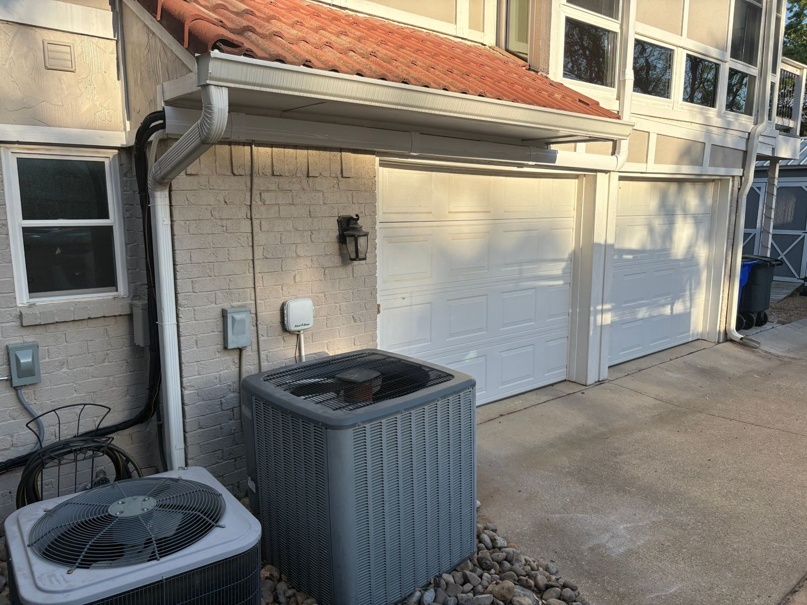

How to keep pipes from freezing in Fort Worth
A cold-weather checklist for Fort Worth homeowners, landlords and commercial property owners, based on Fort Worth Water’s own guidance.
By Jeremy Spann, co-owner of Stacks Property Services. Published November 16, 2026. Last updated November 16, 2026. 7 minute read.

Quick answer
To keep pipes from freezing in Fort Worth, find and test your main water shut-off valve before the cold arrives, insulate pipes in attics and exterior walls, disconnect garden hoses, open sink cabinets, let faucets on exterior walls drip, and turn off and drain your sprinkler system. Businesses with fire sprinklers should leave the heat on overnight and on weekends.
Why do pipes freeze in Fort Worth when winters are mild?
Pipes freeze in Fort Worth because most homes here are built for heat, not cold, so water lines often run through attics, garages and exterior walls with little insulation. Hard freezes are rare, which is exactly why they cause so much damage when they come.
Two recent events show the risk. During Winter Storm Uri in February 2021, roughly 16% of Texans reported that pipes in their home froze and burst, according to Texas Farm Bureau Insurance. In January 2026, the City of Fort Worth warned residents that forecasts showed the possibility of more than 60 consecutive hours below freezing. A Fort Worth water department spokesperson also told FOX 4 that water lines in this area are not buried as deep as they are in colder climates.
What should I do before a hard freeze in Fort Worth?
Start with your shut-off valve, then protect anything exposed to outside air. This order follows the City of Fort Worth’s published guidance.
- Find and test your private shut-off valve. Make sure it turns, and make sure everyone in the household knows where it is.
- Insulate outside pipes and faucets. Disconnect hoses, then cover outdoor faucets (hose bibs) and any exposed pipes.
- Insulate pipes in unheated spaces. Check attics, crawl spaces, garages and the backs of cabinets on exterior walls.
- Open cabinet doors under sinks so warm air reaches the pipes. Move cleaning products out of reach if you have children or pets.
- Turn off or unplug your irrigation system and drain the lines. This prevents burst sprinkler pipes and ice on sidewalks.
- Keep extra drinking water on hand in case a main break or frozen pipe cuts off your supply.
What to do at each temperature forecast
Match your preparation to the forecast. The colder and longer the freeze, the more steps you need.
| Forecast | What to do |
|---|---|
| First freeze of the season | Shut off and drain irrigation, disconnect hoses, cover outdoor faucets, insulate exposed pipes. |
| Overnight lows below 32°F | Open sink cabinets on exterior walls and let those faucets drip overnight. |
| Multi-day hard freeze | All of the above, plus keep the thermostat steady day and night, store drinking water, and keep heat on in commercial buildings with fire sprinklers. |
| After the thaw | Check ceilings, walls and under sinks for leaks. Watch your water meter with all fixtures off to spot hidden breaks. |
Should I drip my faucets in Fort Worth?
Yes. Let faucets on exterior walls drip on any night the temperature is forecast to drop below freezing, because moving water is much harder to freeze. A Texas plumber interviewed by KHOU suggested running a stream about as thin as angel hair pasta rather than a slow drip during severe cold.
Keep dripping as long as overnight temperatures stay below freezing. Fort Worth officials gave the same advice after recent winter storms. If the sound bothers you, set a sponge or towel in the sink to catch the drops quietly.
What should I do if my pipes are already frozen?
If you turn on a faucet and nothing comes out, assume a pipe is frozen and call a plumber. The City of Fort Worth warns that a frozen pipe may already be cracked and can burst once it thaws.
- Leave the faucet open so melting water has somewhere to go.
- Warm the room, not the pipe. Do not put an electrical appliance directly on the pipe, which the city warns can cause it to burst and create a risk of electrocution.
- Never use an open flame to thaw a pipe.
- Have the shut-off valve ready in case the pipe bursts as it thaws.
What should I do if a pipe bursts?
Shut off the water immediately at your private shut-off valve. If you can’t reach it or it won’t turn, Fort Worth Water allows residents to shut off water at the meter in an emergency.
- Lift the meter lid carefully so you don’t damage the wires attached to the radio transmitter.
- Fort Worth residents can call 311 for help shutting off water to their home.
- If you see water running in the street or buckled pavement, report a possible water main break at 817-392-4477 or in the MyFW app.
- Turn off the water heater if the house will be without water for a while, then call a plumber and your insurance company.
What should Fort Worth businesses do before a freeze?
Commercial buildings with fire sprinkler systems should leave the heat on overnight and on weekends whenever subfreezing temperatures are forecast. This comes directly from the City of Fort Worth. Fire sprinkler lines can’t be dripped like a faucet, so heat is their main protection.
- Make sure commercial irrigation systems have working rain and freeze sensors. Fort Worth requires them on all commercial irrigation systems.
- Check that outdoor backflow prevention assemblies are insulated. City installation rules require them to be protected from freezing.
- Shut off and drain irrigation, insulate exposed lines at loading docks and mechanical rooms, and confirm someone can reach the building’s shut-off valve after hours.
For a full year of commercial upkeep, see our annual commercial maintenance checklist for Fort Worth.
Frequently asked questions
At what temperature do pipes freeze in Fort Worth?
Pipes in unheated spaces can start to freeze once outdoor temperatures stay below 32°F for several hours, and the risk climbs sharply in a hard freeze that lasts overnight or longer. Pipes in attics, exterior walls and garages freeze first.
Can I shut off my own water at the meter in Fort Worth?
Yes. Fort Worth Water allows residents to shut off water at the meter during an emergency. Be careful with the lid so you don’t damage the meter’s transmitter wires.
Who do I call for a water emergency in Fort Worth?
Call 311 for help shutting off water to your home. Report a water main break at 817-392-4477 or through the MyFW app. Call a licensed plumber for frozen or burst pipes inside your property.
Should I turn off my sprinkler system for winter?
Yes. The City of Fort Worth recommends turning off or unplugging your irrigation system in winter and draining the lines so they don’t freeze and burst.
Should landlords winterize rental homes?
Yes. A burst pipe in a rental means water damage, emergency repairs and a displaced tenant. Insulate exposed pipes and outdoor faucets before the first freeze, and send tenants a short reminder to drip faucets and open cabinets on freezing nights.
Can Stacks Property Services winterize my property?
Yes. We insulate exposed pipes, cover outdoor faucets, shut down and drain sprinkler systems, and check for leaks after a freeze for homes and commercial properties across Fort Worth. Request a winterizing quote.
Sources
- City of Fort Worth: Tips to protect water pipes during freezing temperatures (January 21, 2026)
- City of Fort Worth: Backflow and cross connection control
- Texas Farm Bureau Insurance: How to prevent your pipes from freezing
- KHOU: How to protect your pipes from freezing
About Stacks Property Services
Stacks Property Services is a veteran-owned property maintenance company based in Fort Worth, Texas, and owned by Jeremy Spann and Tom Morrow. We handle repairs, upgrades and routine maintenance for our neighbors: homeowners, landlords and commercial property owners across the Fort Worth area.